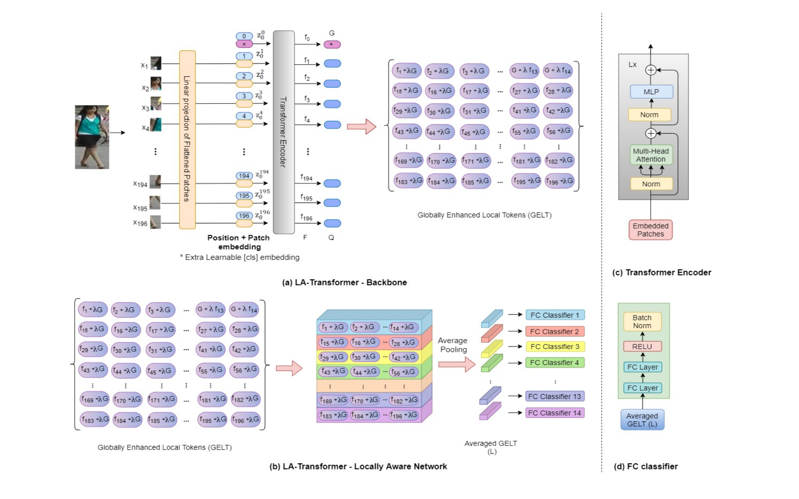
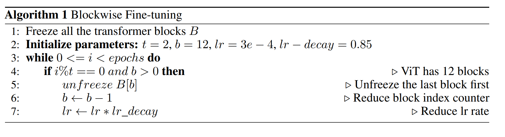

Locally Aware Transformer
Review of Person Re-Identification with a Locally Aware Transformer
Summary in one sentence.
Sharma et al. propused a locally aware transormer inspired by Parts-based Convolution Baseline(PCB) and ViT(Vision Transformer) as well as a fine-tunning strategy which further improve Re-ID accuracy
Introduction
Person Re-Identification task:
- Person Re-ID task includes object dectation and image retrival tasks in earily researches. It separates the tasks and focuses on finding the most similar images in gallery according to the given querry image in recent researches.
- I sammarized some common approaches in my last post, you can check it before going on.
- Extant problem: Exiting approaches only focus on the classification token, and local tokens which are also outputs of the transformer encoder are able to improve the performance of many computer vision tasks.
The LA-transformer utilize local tokens as an enhanced feature representation of the original image. Inspired by the PCB which partitions the feature vector into six vertical regions and constructs an ensemble of regional classifiers with a voting strategy to determine the predicted class label, LA-transformer adopt a PCB-like strategy to fine-tunning on person Re-Id. A limitation of PCB is that each regional classifier ignores the global information which is also very important for recognition and identification. Thus, LA-transformer combines the CLS token and local token to improve performance.
Architecture of LA-transformer

The backbone ViT excludes MLP Head and classifier are same as the original ViT. The novel Locally Aware Network is attached on the backbone network. As the image illustrates that Local feature plus global CLS token to form Globally Enhanced Local Tokens and seprates them into 14 parts. After average pooling, each part of GELT are feed to an independed classifier as PCB’s voting strategy. Eventually, using softmax loss to find the optimal feature representation of images.
Fine-tunning strategy.
Person re-ID datasets are known for their small size and training a transformer on these datasets can quickly lead to overfitting. ViT was pre-trained on ImageNet, and then fine-tuned on person re-ID datasets.
In blockwise fine-tuning, all transformer blocks are frozen in the start
except for the bottleneck model. After every t epochs (where t is a hyper-parameter), one additional transformer encoder block is unfrozen and the learning rate is reduced as described by algorithm1. The learning rate decay helps in reducing the gradient flow in the subsequent layers hence prevent abrupt weight updates.

Test architecture
In the test period, remove the classifiers and use the GELT as a image’s feature representation. Given a querry image, search the most similar images in gallery by the features learned by models.